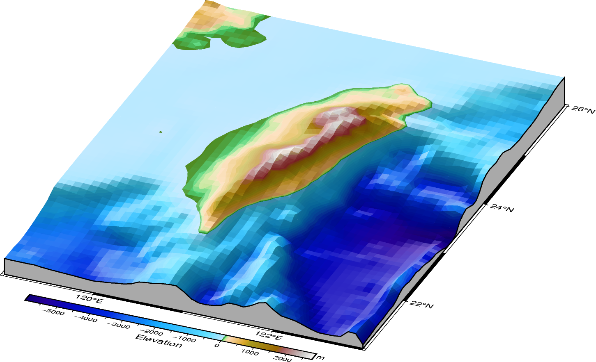
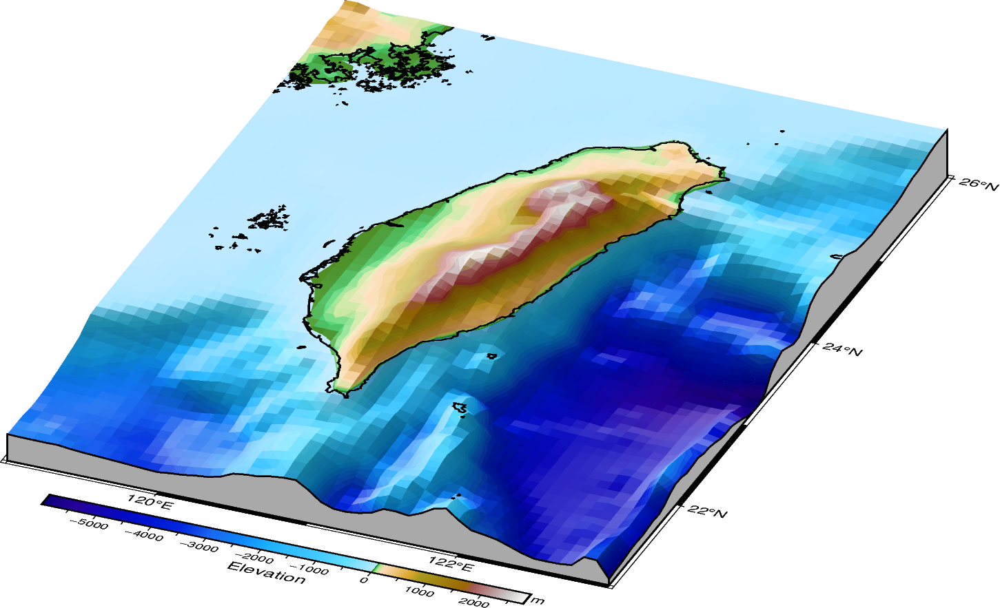
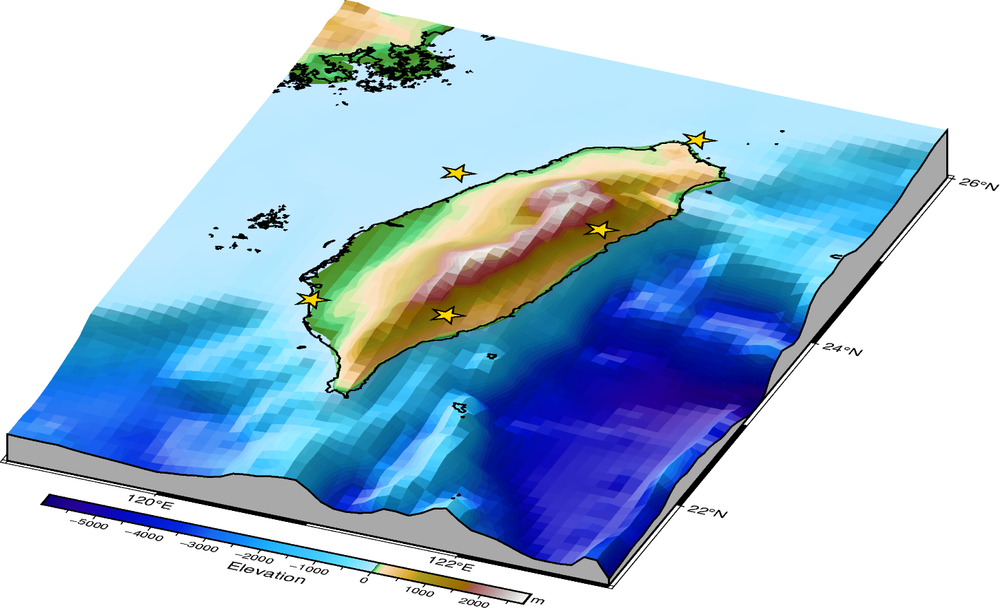
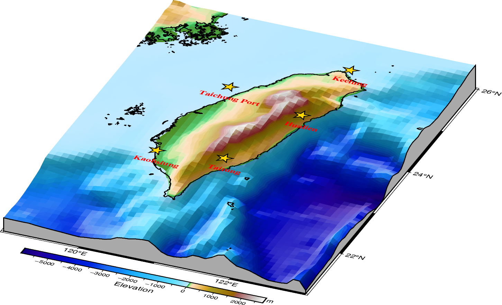

Note
Go to the end to download the full example code.
Plotting features on a 3-D surface
In addition to draping a dataset (grid or image) on top of a topographic surface,
you may want to add additional features like coastlines, symbols, and text
annotations. This tutorial shows how to use pygmt.Figure.coast,
pygmt.Figure.plot3d, and pygmt.Figure.text to add these features
on a 3-D surface created by pygmt.Figure.grdview.
This tutorial builds a 3-D map with additional features in four steps:
Creating a 3-D surface
Adding coastlines on a 3-D surface
Adding symbols on a 3-D surface
Adding text annotations on a 3-D surface
1. Creating a 3-D surface
In the first step, we create a 3-D topographic map using pygmt.Figure.grdview.
We use a region around Taiwan to demonstrate adding features on a 3-D surface.
# Define the study area in degrees East or North
region_2d = [119, 123, 21, 26] # [lon_min, lon_max, lat_min, lat_max]
# Download elevation grid for the study region with a resolution of 5 arc-minutes.
grd_relief = pygmt.datasets.load_earth_relief(resolution="05m", region=region_2d)
# Determine the 3-D region from the minimum and maximum values of the relief grid
region_3d = [*region_2d, grd_relief.min().to_numpy(), grd_relief.max().to_numpy()]
fig = pygmt.Figure()
# Set up a colormap for topography and bathymetry that matches the grid range
pygmt.makecpt(
cmap="gmt/etopo1",
series=[grd_relief.min().to_numpy(), grd_relief.max().to_numpy()],
)
# Create a 3-D surface
fig.grdview(
projection="M12c", # Mercator projection with a width of 12 cm
region=region_3d,
grid=grd_relief,
cmap=True,
surftype="surface",
shading="+a0/270+ne0.6",
perspective=[157.5, 30], # Azimuth and elevation for the 3-D plot
zsize="1.5c",
facade_fill="darkgray",
frame=Frame(axes="wSnE", axis=Axis(annot=True, tick=True)),
)
# Add a colorbar
fig.colorbar(perspective=True, annot=1000, tick=500, label="Elevation", unit="m")
fig.show()

2. Adding coastlines on a 3-D surface
Next, we add coastlines using pygmt.Figure.coast with a matching
perspective setting. Here we set the z-level to 0 so coastlines are drawn
at sea level.

3. Adding symbols on a 3-D surface
In the third step, we add star symbols on top of the same 3-D map. To plot
symbols on a 3-D surface, use pygmt.Figure.plot3d. The z-coordinate should be
set to a value at or above the maximum elevation to ensure the symbols are visible.
Note that 3-D rendering in GMT/PyGMT uses a painter’s algorithm (depth sorting)
rather than true 3-D occlusion. From some viewpoints, symbols that should be
hidden behind terrain may still appear visible.
# Sample point data: five coastal cities around Taiwan
cities = pd.DataFrame(
{
"longitude": [121.74, 121.61, 121.14, 120.30, 120.53],
"latitude": [25.13, 23.99, 22.76, 22.63, 24.27],
"name": ["Keelung", "Hualien", "Taitung", "Kaohsiung", "Taichung Port"],
}
)
# Use one common z-level so all stars are drawn at the same height above the surface.
cities["z"] = grd_relief.max().to_numpy()
# Add five identical star symbols on top of the 3-D surface
fig.plot3d(
x=cities.longitude,
y=cities.latitude,
z=cities.z,
style="a0.65c",
fill="gold",
pen="0.8p,black",
perspective=True,
)
fig.show()

4. Adding text annotations on a 3-D surface
In the final step, we add text labels to the same 3-D map. To add text
annotations on a 3-D surface, use pygmt.Figure.text with
perspective=True. Note that the current implementation of text does not
support a z parameter for controlling the vertical position of text labels.
The text will be placed at the base of the 3-D plot (z=0).
# Add text labels for cities
# Note: text is placed at z=0 (base level) since z parameter is not yet supported
fig.text(
x=cities.longitude,
y=cities.latitude,
text=cities.name,
perspective=True,
font="11p,Times-Bold,red",
)
fig.show()

Total running time of the script: (0 minutes 1.403 seconds)